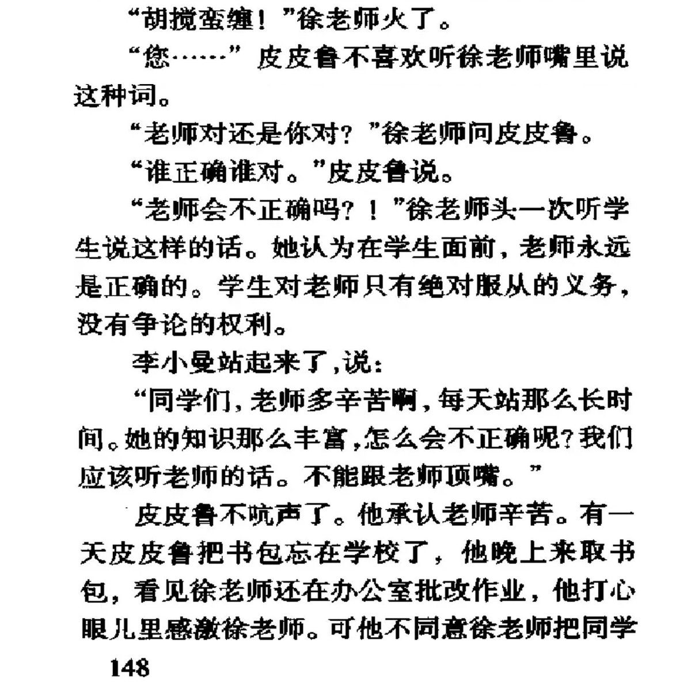
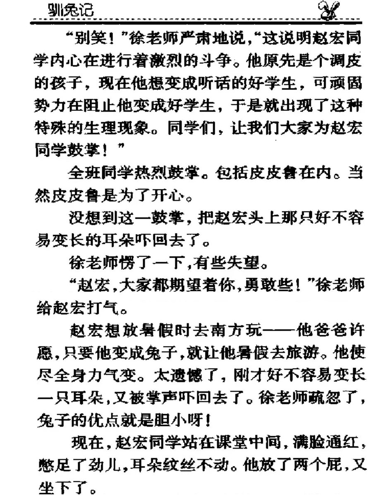
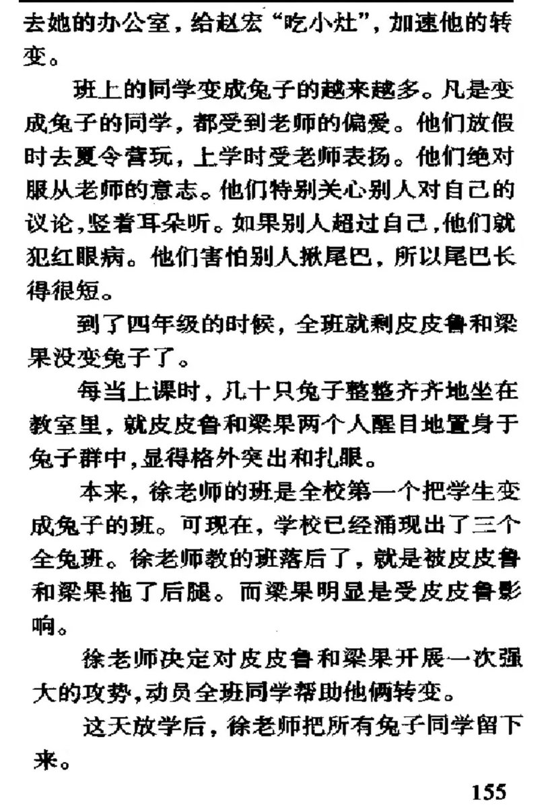
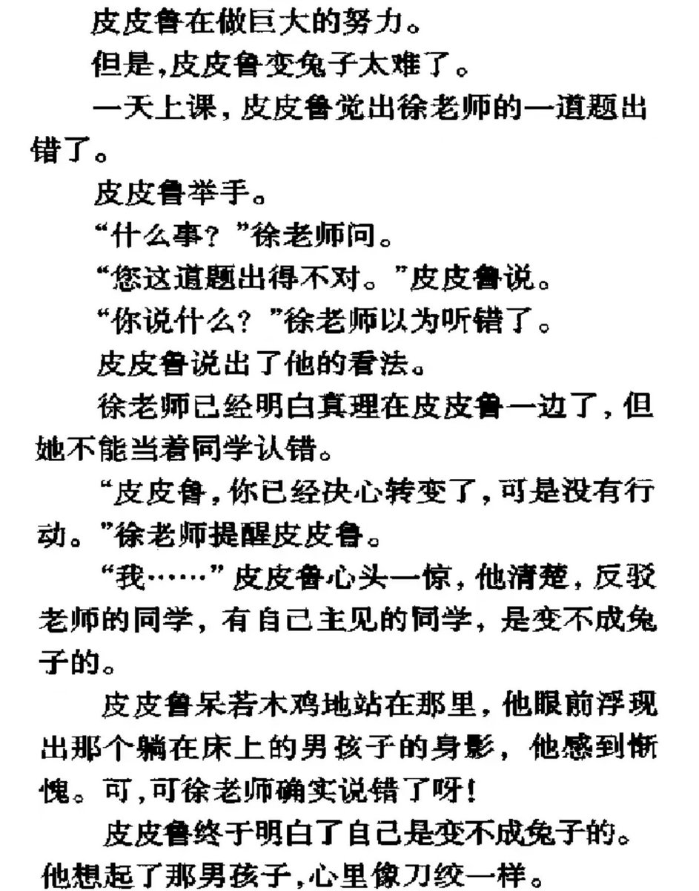

但真正让我喜欢上罗尔德•达尔这个人的是他那本<独闯天下>，这本书不仅让我领略到一些英国的风土人情，更让我在年龄尚小的就从这位前皇家空军王牌飞行员口中了解到波澜壮阔的历史和缤纷多彩的世界。





重讀鄭淵潔的童話。實在太佩服/感激童年中遇到如他這樣的作家創作出過那些真正辛辣、黑色幽默的諷刺童話。至今也還記得小時候讀到他和同類型作品的時候那種心臟發抖的快樂，那種夾雜著興奮、害怕和憤怒的難以置信，就像不可思議地看著竟然有人膽敢渾身赤裸地這樣思考、敢這樣寫作，看到脆弱的人類身體 https://t.co/4GtTmzB75U